01
广场中心：开阔而易辨认
Piazza 的中央地面视野开阔，教堂提供明确的视觉终点；适合聚集、停留与仪式性活动。
由宗教广场、城市柱廊与潟湖门厅构成的连续公共空间。
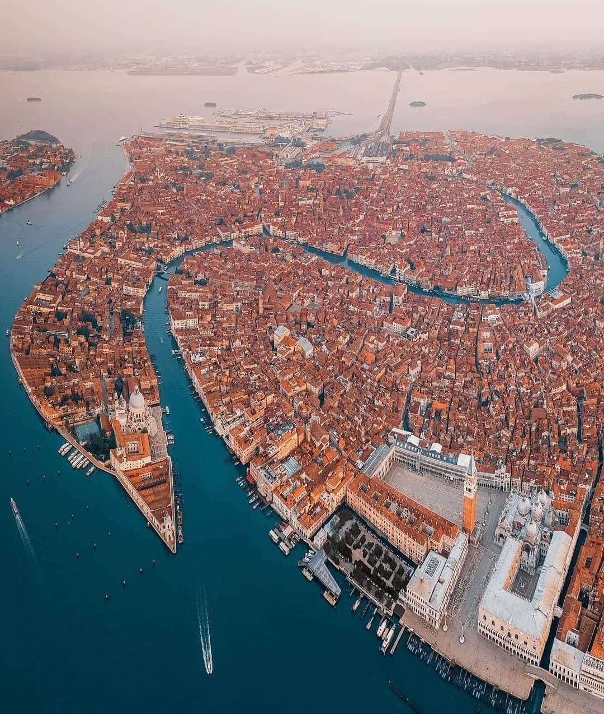
圣马可广场的核心价值，在于将相对围合的 Piazza、通向潟湖的 Piazzetta、连续柱廊与标志性宗教建筑整合为一组清晰而多样的公共空间。
它既提供日常穿行和自由停留的城市地面，也承载宗教仪式、节庆活动及商业使用。
建造年代反映广场长期形成过程，并非单一竣工年份；面积采用公开资料所列数值。
以不同年代的原始建筑平面与改造图纸对照广场边界的变化，而不是用历史照片替代空间证据。
.jpg?width=1000)
%2C%2001.jpg?width=1100)
1689年 · Robert de Cotte 的平面记录了西端拿破仑时期改造之前的广场形态。
19世纪初 · 原 San Geminiano 教堂拆除，兴建 Ala Napoleonica，改变广场西端的建筑界面。
1831年 · Quadri 与 Moretti 的总平面记录改造后的 Piazza 和 Piazzetta；图版 IX 则直接呈现新旧建筑平面的区别。
图纸年代指绘制或出版时间，不等同于建筑建成年代。各图比例、朝向与测绘精度可能不同，不能直接作为同尺度叠图使用。
狭窄街巷进入 Piazza 时，视域骤然展开；沿钟楼转向 Piazzetta，空间再次向潟湖开放。这是一个具有方向性、边界差异和多重终点的空间系统。
长度和宽度为公开资料所述近似尺寸；面积采用意大利语维基百科所列 12,600㎡，不含 Piazzetta，不由长宽推算。
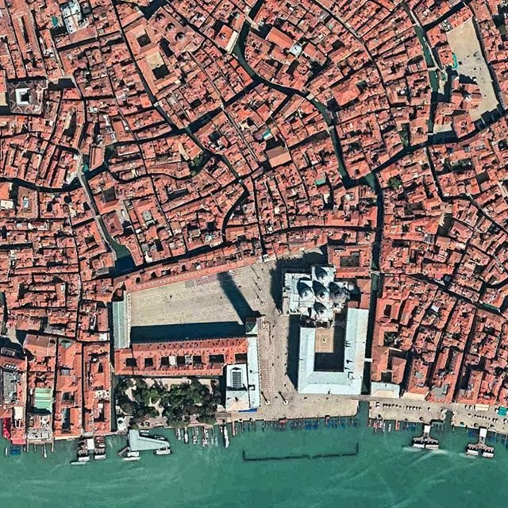

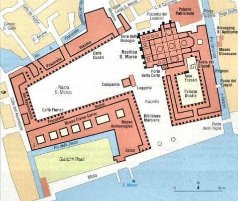
主体 Piazza 的梯形空间由两侧连续柱廊围合，东端以圣马可大教堂为视觉终点；Piazzetta 向南连接潟湖，形成方向与边界性质不同的第二处公共空间。
圣马可广场的空间价值，不只是一个宏大的开放场地，而是把狭窄街巷、围合广场、连续柱廊和潟湖水岸串联成层次丰富的公共空间。
Piazza 的中央地面视野开阔，教堂提供明确的视觉终点；适合聚集、停留与仪式性活动。
两侧柱廊提供有方向性的步行界面，商业与休憩沿边界展开，使广场中央可以保持相对自由。
从 Piazza 经 Piazzetta 转向潟湖，空间由围合转为开放，形成不同于单一广场的连续城市体验。
以上是依据空间形态与现有图像形成的定性判断，不是已经计算验证的空间句法排名。广场是否具有较高的城市网络整合度，仍需完整的街巷与开放地面模型验证。
以开阔中心承载集体活动，以连续边界承载日常商业和停留，以入口与转角组织探索。不同空间承担不同角色，比把所有功能堆在中心更有效。
开阔视野带来方向感，但实际通达性仍取决于街巷入口、柱廊是否开放以及与周边路网的连接。设计评估应同时看视觉体验与真实步行路径。
建筑为深灰色，街道与广场留白，水面为淡蓝色。与上面的概念示意不同，这张图按 OpenStreetMap 建筑轮廓的真实地理坐标绘制，不添加未经核实的建筑形状。
建筑边界取自 OSM 的 building 标签；不代表完整室内公共空间或柱廊通行范围。数据不可用时不以虚构图形替代。
先看空间如何围合，再看人如何穿行。下图是依据场地空间关系绘制的教学示意，不是测绘图或计算结果；原始数据与计算工具收在下方。
注意：现有 OSM 路网尚未稳定加载，因此暂不把示意图伪装成真实的街道可达性热力图。真实量化图需在数据与拓扑核验后生成。
以下互动地图用于观察周边步行道路、检查潜在入口，并比较不同距离内的道路可达长度。它属于初步网络探索，不是正式的空间句法整合度、选择度或可视域（VGA）计算。
虚线图层需勾选后显示；候选端点需先运行「检查广场入口候选点」；蓝—红色可达性点及色斑图需先运行计算。色斑图只是将道路抽样点显示为半透明色斑，不是连续空间句法热力图。红色不代表人多，只表示沿路可到达的道路相对较多；蓝色表示较少。入口圆点是待检查的位置，不等于真正的入口。
数据来源：OpenStreetMap / Overpass。道路和广场面可能不完整，入口候选点未经现场验证；道路可达长度不代表人流量，也不能替代 VGA。导出的 GeoJSON 仅供进一步核查。
Procuratie Vecchie 与 Procuratie Nuove 的连续柱廊共同定义广场的两侧边界；教堂构成东侧复杂的视觉终点，钟楼则是独立的垂直地标。
广场的宽度由西端约 56 m 向东端约 81 m 变化，因此即使两侧立面高度相同，高宽比也并非固定值。
已确认钟楼总高 98.6 m、基座平面约 12 × 12 m；教堂中央外穹顶约 43 m。Procuratie Vecchie / Nuove 的檐口高度暂未找到可靠统一测量值，不将建筑总高与檐口高混用。
连续立面与拱廊形成相对稳定的步行边界，适合研究立面节奏和边缘活动。
柱廊、咖啡馆与公共地面之间形成多层次使用界面。
大教堂与钟楼构成非均质端景，区别于两侧规则的柱廊边界。
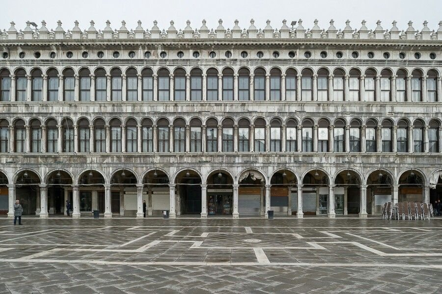
这组建筑师发布的原始资料可直接用于比较北侧 Procuratie Vecchie 与广场其他边界。项目于 2022 年完成；Generali 的改造范围约 12,400 m²，覆盖北侧 50 个外部拱券中的 43 个，沿广场长度约 152 m。152 m 是该项目涉及的立面范围，并非已核实的整个北侧建筑总长度。
图纸标出钟楼旁时钟塔、Procuratie Vecchie / Nuove、拿破仑翼等建筑的建设阶段，可对照立面形成时间。
用于研究 Procuratie Vecchie 面向 Piazza 的开间节奏、窗洞与拱廊关系；不以图片比例推断未标注的高度。
研究拱廊、楼层与内部空间的剖面关系，为后续 H/W 研究提供可追溯图纸基础。
资料来源：Archilovers · David Chipperfield Architects / Procuratie Vecchie。原始 PDF 保留在发布方服务器，版权归原权利人；建筑师图纸的剖面与立面尺寸尚需逐项核读。
该图版将西端拿破仑翼的建筑立面与原 San Geminiano 教堂及新建筑的平面并置，适合在边界立面章节阅读；其历史变迁仍在前文说明。
%2C%2009.jpg?width=1200)
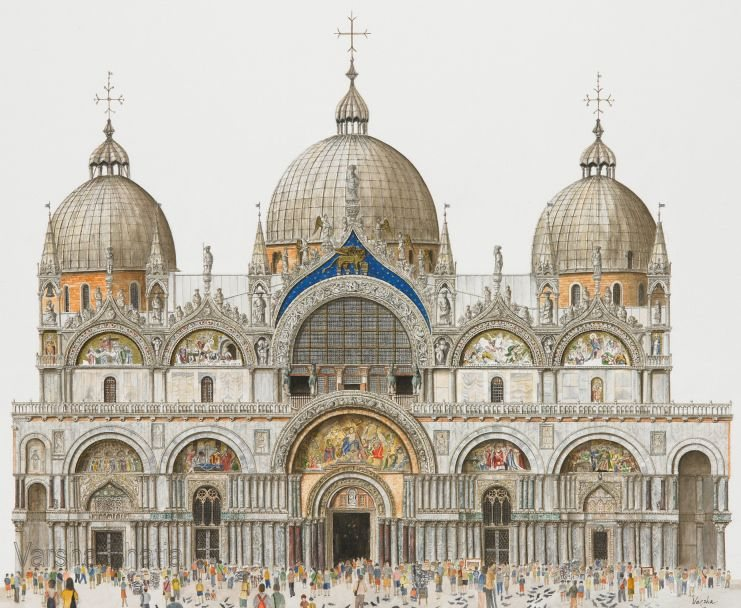
圣马可大教堂并非一面平整的端墙。五个主入口拱券、上层雕塑与穹顶共同形成深度丰富的视觉终点；中央外穹顶高度约 43 m。
与两侧柱廊的重复模数不同，教堂以不规则的轮廓和层层退进的立面组织广场东端，强化宗教与公共空间的交汇。它与独立钟楼共同构成非对称的纪念性构图。
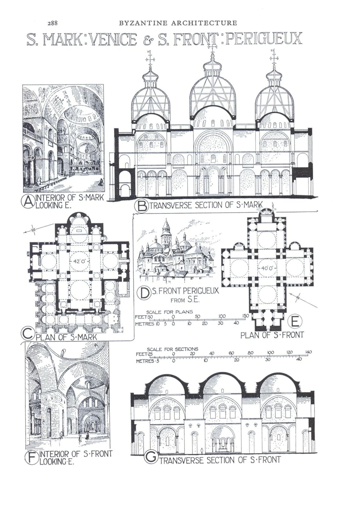
总督宫位于 Piazzetta 东侧及潟湖岸边，底部开放柱廊与上部较完整的墙面形成鲜明的轻重倒置关系。它主要定义的是 Piazzetta 和水岸边界，而非 Piazza 两侧的 Procuratie 立面。
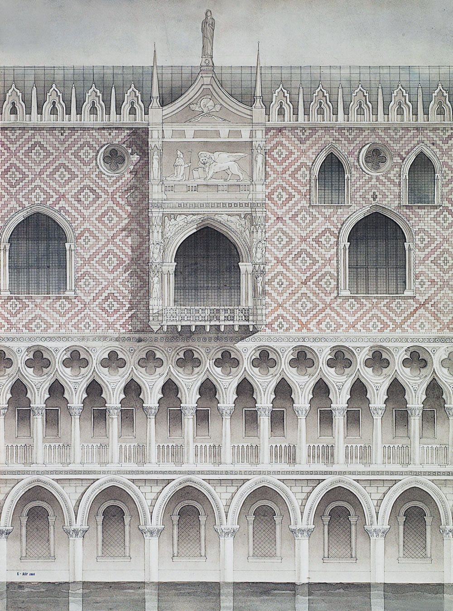
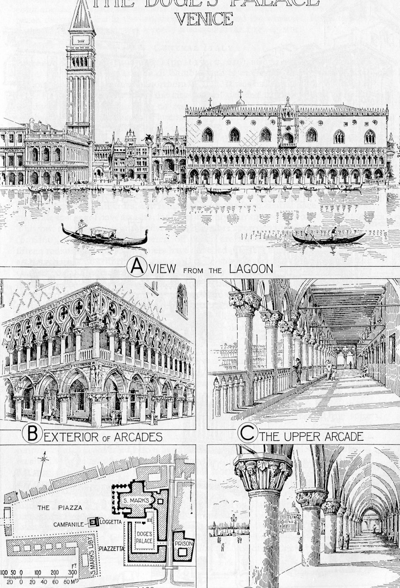
高 98.6 m、方形塔身边长约 12 m，钟楼与广场边缘的连续柱廊形成鲜明的垂直—水平对照。其位置偏向广场东南侧，既标识 Piazza 与 Piazzetta 的转折，也从水岸构成城市天际线的远距离识别点。
钟楼于 1902 年倒塌，1912 年按原貌重建。底部 Sansovino 的 Loggetta 将纪念性地标转化为可接近的城市界面。

研究广场围合程度时，应使用两侧 Procuratie 的檐口高度 H，而非钟楼总高或教堂穹顶高度。现有公开资料提供广场两端近似宽度，但尚未核实两侧檐口高度，因此不展示未经证实的 H/W 数值。
比较方法：在同一横断面上记录建筑檐口高度与广场净宽；北、南两侧檐口如有差异，应分别计算。下方仅为拓扑关系示意，不是按比例测绘剖面。
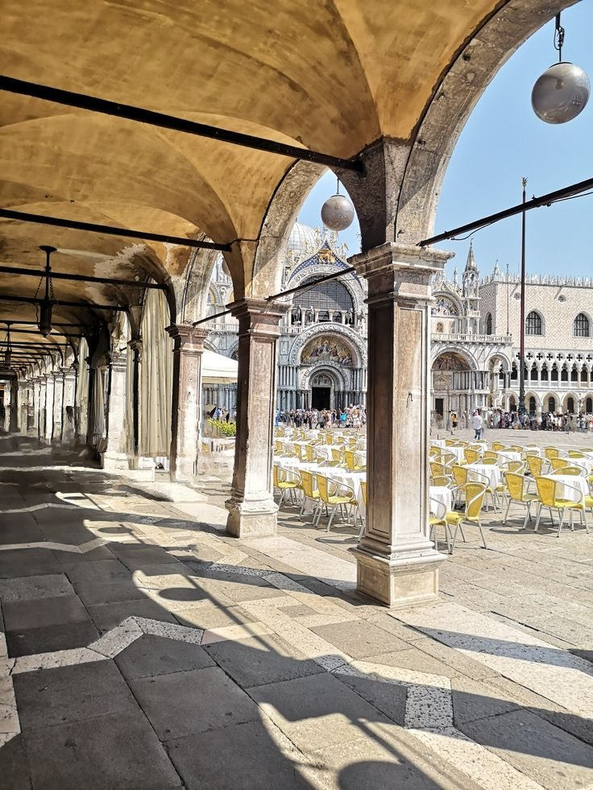
两侧柱廊提供连续的立面基准和步行尺度；在约 56–81 m 的广场宽度下，建筑边界的节奏比单一立面高度更直接地影响人的空间感知。
东端大教堂和钟楼改变了规则立面所形成的均质感，提供方向性与视觉焦点。
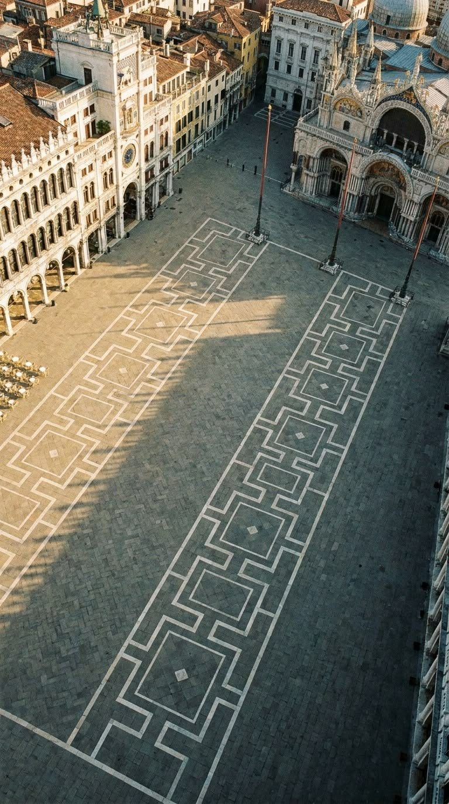
几何纹样强化广场的纵向秩序，也使两侧建筑界面与开放地面形成整体。铺地不仅是视觉图案，也是日常步行、集会及高潮位积水时直接受到影响的公共空间表面。
通过三个真实使用场景比较圣马可广场：日常步行与抵达、付费商业停留，以及节庆期间的集体占用。
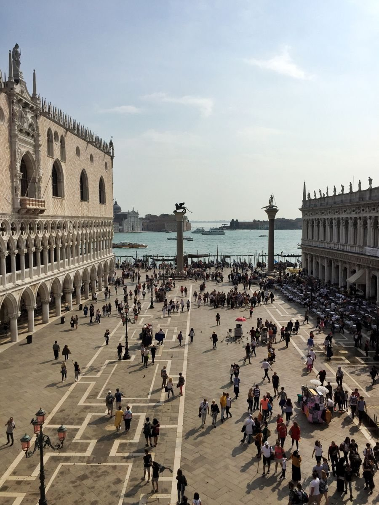
街巷入口将人流汇入 Piazza，再经 Piazzetta 连接水岸；开阔的中心地面支持多方向穿行。
Piazzetta 水岸日常活动 · 用户提供照片
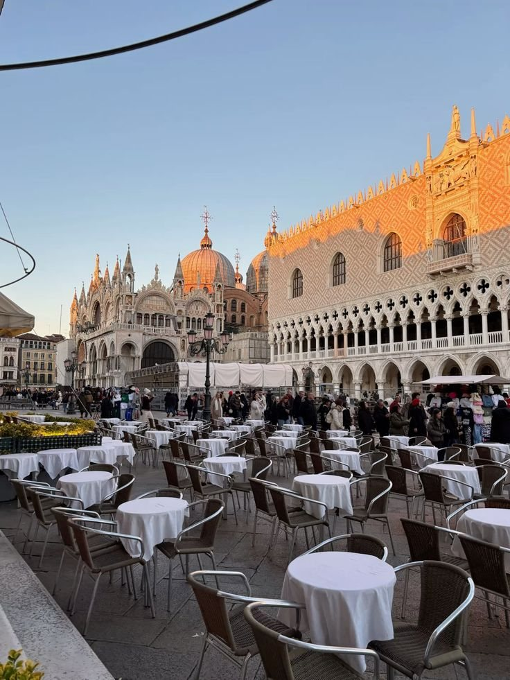
室外桌椅沿建筑边缘组织，形成商业停留带；广场中心则保持不同程度的公共开放性。
咖啡馆外摆与公共地面 · 用户提供照片

狂欢节期间，广场的开阔地面转化为节庆和集会空间，人流密度与活动组织不同于日常。
2014年威尼斯狂欢节 · Paolo Zavoli，Wikimedia Commons · CC BY-SA 4.0
圣马可广场的公共空间并非始终是干燥、可连续使用的地面。异常高潮位（Acqua Alta）会改变步行路径、商铺经营和建筑底层的保护方式；长期海平面上升与地面沉降使风险更复杂。
广场地势低，异常高潮位时可能较早出现积水。淹水与潮汐、风、气压及潟湖水位共同相关，并非全年持续状态。
长期相对海平面上升增加达到既定淹水水位的可能性，也需考虑当地地面沉降；单次洪水不能直接归因于气候变化。
潟湖入口的可移动屏障可在预报高潮位时启用，以降低特定事件的影响；但不能替代局部排水、铺装维护和历史建筑保护。
日常：广场作为开放的步行与停留空间。预警：通行路线、无障碍路径和咖啡馆外摆可能需要调整。积水：地面成为需要绕行、临时保护与恢复的脆弱界面。
值得持续记录的指标包括淹水频率和持续时间、柱廊可达性、临时步道组织、盐水对石材与建筑基座的影响。
抬高地面、设置防水设施或改变排水方式，都可能影响历史广场的原始比例、建筑门槛和公共开放性。韧性策略必须同时衡量遗产真实性、日常使用与防灾效果。
本章为机制与空间影响分析；具体地面高程、淹水频率及 MOSE 运行阈值尚需官方监测资料核实，不以未经证实的数字填充。
以下为威尼斯市潮汐监测记录的高潮位（相对于当地潮位基准），不是圣马可广场地面的实际积水深度。不同年份不能直接用来推算未来趋势。
数据：Comune di Venezia · Valori caratteristici della marea。这些是挑选的事件值，不是连续时间序列。


两张照片用于观察地面、行人及建筑底层如何受到水位影响；照片拍摄时刻不对应上列三个历史极值，不据照片推断水深。
圣马可广场的核心经验，不是单纯创造一个巨大的开放场地，而是以连续的建筑边界形成可识别的公共房间，以街巷—广场—水岸的序列组织城市体验，并以相对开放的中央地面与活跃的周边界面支持日常活动和仪式性使用。
但它的公共性并非仅由建筑决定。咖啡座位的许可、公共通行的维护、节庆时的临时管理，同样决定了谁能使用空间、以何种方式使用空间。
可转译原则：保留具有集体弹性的中心；让日常活动依附可停留的边界；建立明确的空间序列；将商业使用权与公共可达性作为一体化设计问题。
外部 Wikimedia 图片仍从源站加载，未宣称拥有图像版权。图像署名与原始文件许可见各图注及来源页。
用于设计研究归档、项目汇报和案例对照的单页资料。选择「打印 / 保存 PDF」，在浏览器中保存为一页横向 A4 PDF。
威尼斯圣马可广场 · VENICE, ITALY
Conceptual diagram / 空间示意，非测绘平面。
SPATIAL READING / 核心空间判断Enclosed civic room → transitional piazzetta → open waterfront.
围合的城市客厅经 Piazzetta 过渡至开放水岸；中心地面保持弹性，连续柱廊形成可停留的活跃边界。
.jpg){kind=link}